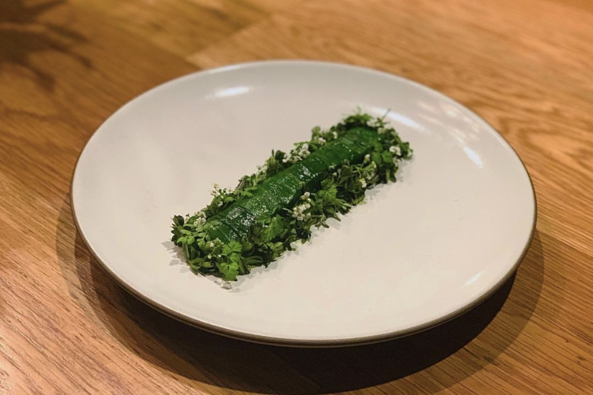
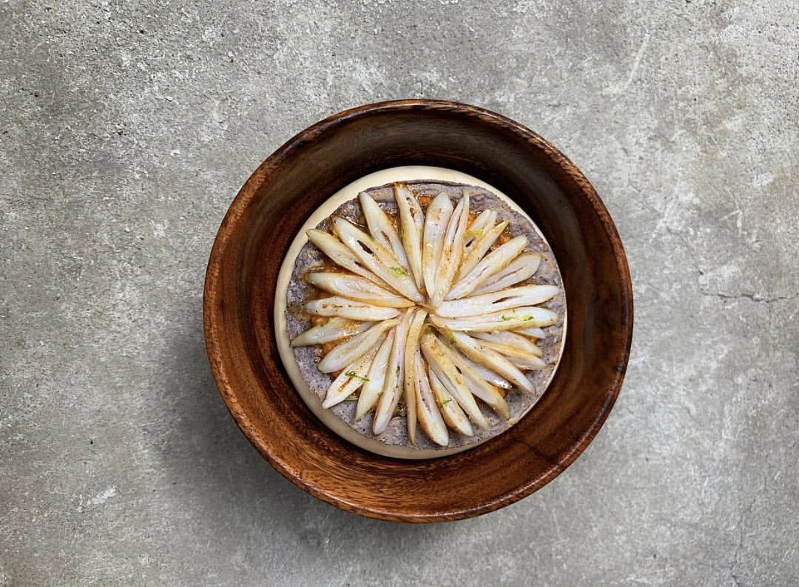
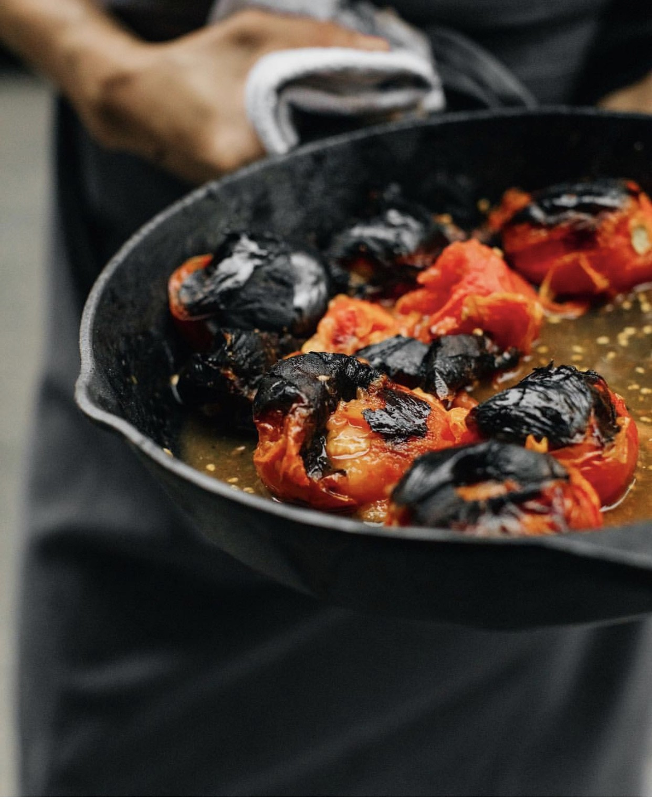

Trabajo de Daniela Soto-Innes

Tamal de rampa con mole verde.
Tamal de rampa con mole verde.

Tostada de almeja navaja con salsa macha de cacahuate.
Tostada de almeja navaja con salsa macha de cacahuate.

Salsa tatemada. .
Salsa tatemada. .
Reconocimientos de Daniela Soto-Innes
- En 2019, Daniela Soto-Innes fue galardonada con el prestigioso premio "Mejor Chef del Mundo" en los premios "The World's 50 Best Restaurants". Este reconocimiento la destacó como una de las chefs más influyentes y talentosas a nivel global.
- Daniela Soto-Innes ha sido reconocida con múltiples premios James Beard, considerados los premios más prestigiosos de la industria culinaria en Estados Unidos. Entre estos premios se encuentran el "Rising Star Chef of the Year" en 2016 y el "Best Chef: New York City" en 2017.
- En 2021, Daniela Soto-Innes fue incluida en la lista "50 Next", una iniciativa que destaca a las 50 personas más influyentes y prometedoras en el futuro de la gastronomía.
Citas inspiradoras
"La cocina es mi pasión y mi forma de expresión creativa. Cada plato cuenta una historia y quiero que sea una experiencia memorable para cada comensal."
Datos estadísticos
| Categoría | Estadística |
|---|---|
| Visitas al sitio web | 30 |
| Seguidores en redes sociales | 152K |
| Recetas publicadas | 200 |
| Reconocimientos | 15 |
| Fuente: Daniela Soto-Innes | |